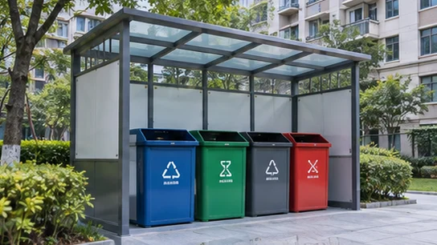
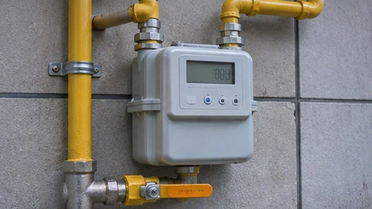
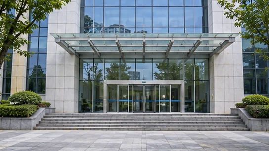

企业 AI 应用平台
企业知识库将制度、合同、工单和技术资料整理为可检索、可问答、可溯源的知识。智能体与流程自动化支持理解任务、开展多轮对话，并调用现有业务系统执行流程。
智能检索与问答答案溯源权限隔离任务规划流程编排系统对接效果评估
上海令敏信息科技有限公司（简称令敏科技）位于上海市松江区， 为企业、政府机关和事业单位提供软件定制开发、IT 咨询、产品实施与系统运维， 服务覆盖需求分析、设计开发、测试上线和后续维护。
令敏科技基于自研平台交付企业 AI 智能体、企业知识库、数据可视化及 ERP、OA、CRM 等业务系统。 项目涵盖城市内涝预警、金融机构客服中心及制造产线设备数据采集。
初心不忘共成长 · 凝心聚力谱新篇
深耕技术、连接未来、创造可能
为客户提供更好服务，为员工搭建广阔舞台
诚实、公正、稳健、创新
借助公司既有软件平台与成熟组件，完成从需求分析、设计开发、测试到上线的全流程交付，覆盖门户网站、OA 协同、业务管理系统与数据平台，为客户节约宝贵时间，同时创造更多价值。
核心团队具备 PMP 认证与 PMO 体系建设经验，为企业提供 IT 战略规划、需求分析、技术方案与售前招投标支持、项目规划及风险预测等服务。
提供系统监控、故障恢复、二次开发与持续优化，长期保障政府、医院等单位 OA 及业务系统稳定运行，让客户专注核心业务。
代理销售软件产品并提供落地实施服务，为客户搭建完整的企业信息化解决方案。
六项产品与解决方案覆盖企业 AI 应用、数据决策、经营管理、协同办公、客户服务与电商运营
企业知识库将制度、合同、工单和技术资料整理为可检索、可问答、可溯源的知识。智能体与流程自动化支持理解任务、开展多轮对话，并调用现有业务系统执行流程。
数据汇聚 + 可视化管控平台：统一采集多源数据，完成治理与指标体系，以三维场景、指挥大屏与经营报表呈现；内置可视化搭建工具，图表组件拖放组装、属性在线编辑，大屏项目快速交付。
面向制造、贸易、零售企业的一体化业务管理系统，把采购、销售、库存、生产与财务放在同一条数据链路上，支持多组织、多仓库、多单位与权限分级。
面向政府机关、事业单位与多分支企业的协同办公平台：自研流程引擎按需配置表单与审批流程，一次配置、快速上线，解决多部门、跨地域办公繁琐重复的问题。
客户关系管理（CRM）支持扫码获客、线索归集、客户分配与销售跟进。智能客服中心支持来电识别、自动应答、咨询投诉和回访问卷，复杂问题可转工单，由相关部门协同处理至结案。
商城、订单、仓储一体化的电商中台：统一管理库存、价格与订单，避免超库存与超卖；一键铺货至主流电商平台，支持一件代发。
从需求调研到上线维护，以项目定制、产品实施和咨询规划三种方式支持业务落地
深入业务现场，梳理流程、痛点与目标，明确建设范围与验收标准。
结合自研产品与行业经验，输出业务方案、实施计划与风险预案。
基于成熟产品快速配置与定制开发，分阶段演示、持续确认。
组织用户测试、数据初始化与操作培训，保障系统平稳上线。
提供系统维护与故障响应，按业务变化持续迭代优化。
结合 IT 咨询与项目经验，梳理业务需求、技术路线和实施计划；针对 AI 场景评估可行性，规划智能体与知识库应用。
适合建设方向尚未明确、需要先评估与规划
基于自研平台或代理软件产品，提供部署配置、系统对接、数据迁移与培训，按业务需要完成实施。
适合需求与产品匹配度高、希望快速上线
围绕业务流程定制软件，明确建设范围与验收标准，分阶段完成设计、开发、对接与上线。
适合个性化强、流程独特的业务系统
了解令敏在城市治理、金融服务、企业制造、电商零售和教育文化领域的项目实践
统一接入街镇积水监测设备、雨量监测、河道水位与泵站运行状态等多源数据，构建短时积水趋势智能预测，实现未来 1–3 小时积水变化与风险等级动态预判，推动城市防汛由「事后响应」转向「事前预判」。
面向公寓房、公租房与酒店，通过人脸、指纹与车辆识别，与住户、物业信息匹配后快速放行，并提醒物业费与车辆到期；配套消防监测子系统，实时监测火灾报警、消防水压、泵房温湿度与水池液位，超阈值自动告警。

对垃圾投放行为进行实时监测与智能识别，及时发现并纠正错误分类问题，提升分类准确率与整体管理效率；依托数据分析与实时反馈，推动管理方式由被动处理向主动预防转变。

面向千万级燃气用户的远程燃气表管控平台，由燃气表数据采集、燃气数据监控与燃气表指令三大子系统组成，支持用户在线购气、燃气检测与远程安全控制，实现表计数据采集、运行监控与远程指令下发的集中统一管理。
汇聚网络流量与安全设备数据，与安全情报库交叉比对，发现并告警网络攻击、安全异常与未知威胁，支持事件溯源；同步监测主流媒体网站舆情，提供趋势研判与突发事件告警，实现信息上报、审核、下发、处置与反馈的闭环管理。
以监管大屏的形式，对融媒体中心的网络设备资产与网络运行状况进行集中监控，统一掌握各类设备资产与网络运行状态，及时发现网络异常，为网络安全监管与日常运维提供直观、统一的数据依据。
解决业主单位协同办公、多部门、跨地域办公繁琐重复的问题，通过自研流程引擎快速生成符合实际办公需求的功能模块与流程，实现一次配置、快速上线、稳定运行；并为医院、街道与政府部门提供长期运维、故障恢复与二次开发服务。
记录卫生条线执法部门对各类营业场所的检查数据（水、消毒与灭菌、放射与职业卫生危害等），预设计算公式自动完成指标计算，按统一标准判断卫生达标与否并出具结果报告，降低人工计算出错率。

为政府机关、研究机构、产业园区及国际组织智慧城市中心建设对外门户与内容管理系统，发布政务动态、居委活动、园区新闻与招商招聘信息，支持后台动态维护前台内容，并完成与内部办公系统及合作方的对接。
依托楼宇本地弱电智能化系统与银行内部部署，整合楼宇各类运行数据，以三维可视化方式为员工、访客、物业与管理人员提供信息互通、数据共享与可视化管控，支撑数据驱动的智能决策。
为客服人员处理来电咨询与外呼回访，来电自动分类并完成基础问题应答，按来电号码调取历史记录与处理进度；涵盖客户、咨询、投诉、问卷、知识库与质检报表，疑难问题一键发起跨部门工单，跟进直至结案归档。
为投行、券商财务顾问与投资人提供交易匹配和管理工具，帮助私募基金、企业、投资银行将项目发布给投资者，提供交易信息共享、匹配推介与交易进展管理，扩大投资人资源。
面向房产投资业务的资源管理平台：客户可便捷浏览房源、查询周边配套资源；业务人员可使用房源发布、分享与客户接待等管理工具，在一个平台上完成房源展示与客户跟进，实现更高效的房产信息交流与业务推进。
为投资机构建设的期货数据分析与交易系统，由数据采集、核心数据分析预测、交易、风控与报表分析五个子系统组成，对接期货行情与交易通道，支撑投研分析与交易管理。
建设企业服务小程序与「企业接班人能力测评」AI 智能体：小程序作为企业服务与 AI 能力的统一入口，智能体结合企业知识库与测评体系，实现智能问答、能力测评与结果分析，形成可快速复制的企业 AI 应用模式。
面向进出口物流业务的报关单识别管理平台，借助 AI 自动识别不同报关单的内容，并按规定格式生成报告，减少人工逐单录入与核对的工作量；在使用过程中持续优化识别效果，确保识别精准度。
面向流水线机床的数据采集与分析，实时监控设备运行状态、加工数据与报警信息；集成工件管理与质检管理，追踪工件从生产到质检全过程，并为后续生产管理系统预留数据对接能力。
构建 AI 安全生产管理平台，通过视频智能识别自动发现施工现场违规行为、设备缺陷与环境风险，替代 80% 以上初级人工巡检；建设安全知识库，突发事件中秒级调取并解析应急预案、生成处置方案。
承载整车研发、生产管理与质量检验等环节的文档知识，支持用户体系化学习，为研发与沟通提供依据，文档全程版本控制、变更可追溯；项目中与海外总部用户直接沟通需求，并负责进度与质量管理，协同完成交付。
为企业打造的线上云展厅小程序，由团队完成整体设计与开发，把线下展厅的展示内容搬到手机端，客户与访客无需到场即可随时浏览、了解展厅内容，并可分享给更多人，延伸展厅的展示与传播范围。
国内专业的袜子批发 B2B2C 平台，由商城、订单管理与仓储管理三大子系统组成，统一管理库存、售价与订单避免超卖，支持一键铺货至阿里巴巴、淘宝、天猫及一件代发。
面向各区域玉米零售商的信息管理与客户互动系统，为零售商提供全面的信息管理和客户互动解决方案，把日常经营信息与客户沟通集中到一个系统中处理，帮助零售商优化运营、提升客户体验、促进销售增长。
多商家个性化定制电商平台，支持各商家独立运营与个性化配置，覆盖商品定制、订单流转与后台管理等环节，消费者可按需定制商品；平台以一套系统同时服务多个业务主体，各商家无需重复建设各自的系统。
连锁商超内部的核心竞争力系统，采集快消品市场价格数据，比对分析自身在快消品行业的价格竞争能力，并进行用户行为分析，为定价与经营决策提供依据；承担系统二次开发、用户验收、上线与日常维护。
为英语培训等教培机构打造的一对多在线直播教学系统，提供音视频直播授课、互动白板、课堂聊天、答题器与课时计费；配套机构管理端，统一管理学生、班级、教师与教材，并查看各类经营统计。
为国际戏剧村建设的信息管理与交流平台，融合戏曲展示、戏曲培训、戏曲花絮和戏曲交流等多个板块，戏曲爱好者可在线欣赏戏曲内容、了解培训信息并参与交流互动，打造全面的戏曲文化互动平台。
案例配图为 AI 生成的业务场景示意。
该领域下暂无案例。
部分服务单位与合作平台，覆盖我们服务的 5 大领域
期待与您携手，共创更多可能